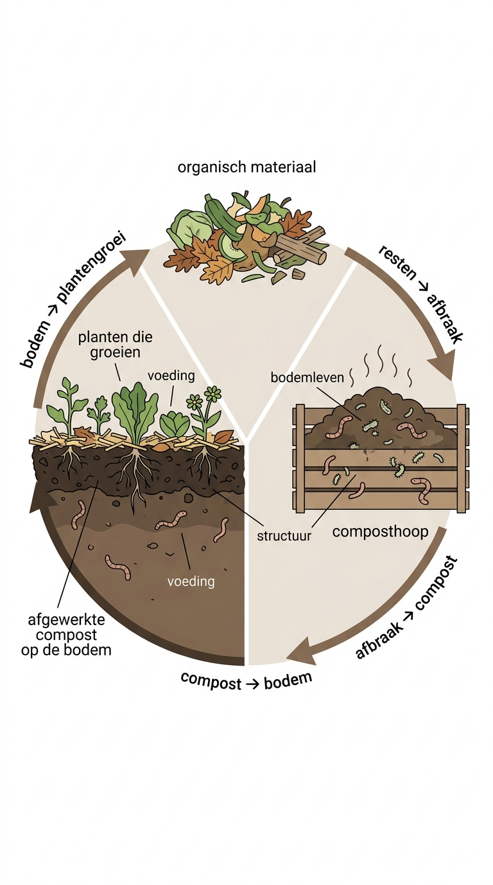

Wat is het?
Afgebroken organisch materiaal dat je bodem voedt.
Hoe werkt het?
- brengt voeding terug
- stimuleert bodemleven
- verbetert de structuur van de bodem
- sluit de kringloop
Hoe werk je ermee?
- gebruik het in potjes en zaaitrays
- leg het bovenop de bodem
- leg het onder de mulch
Nuance / wanneer
Compost is geen must, maar een versneller van wat mulch ook doet.